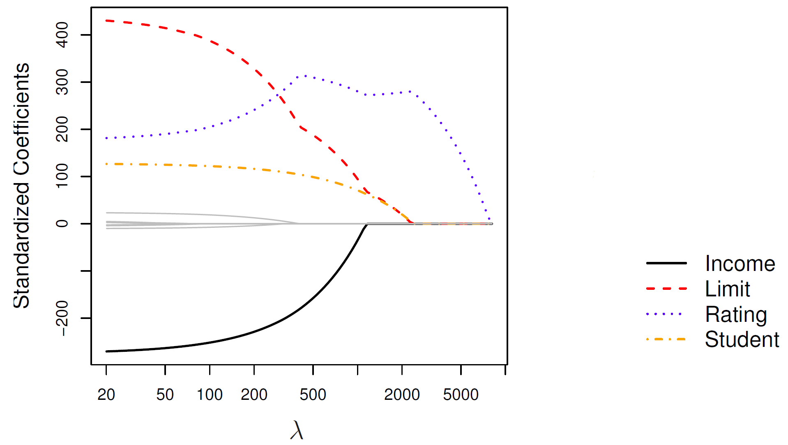

<!DOCTYPE html>
<html lang="es" xml:lang="es">
<head>

  <meta charset="utf-8" />
  <meta http-equiv="X-UA-Compatible" content="IE=edge" />
  <title>Capítulo 8 Regularización: Ridge, Lasso y Elastic Net Logit | Ciencia de Datos</title>
  <meta name="description" content="BCRA" />
  <meta name="generator" content="bookdown 0.45 and GitBook 2.6.7" />

  <meta property="og:title" content="Capítulo 8 Regularización: Ridge, Lasso y Elastic Net Logit | Ciencia de Datos" />
  <meta property="og:type" content="book" />
  
  <meta property="og:description" content="BCRA" />
  <meta name="github-repo" content="msangia/msangia.github" />

  <meta name="twitter:card" content="summary" />
  <meta name="twitter:title" content="Capítulo 8 Regularización: Ridge, Lasso y Elastic Net Logit | Ciencia de Datos" />
  <meta name="twitter:site" content="@msangia" />
  <meta name="twitter:description" content="BCRA" />
  

<meta name="author" content="Máximo Sangiácomo" />


  <meta name="viewport" content="width=device-width, initial-scale=1" />
  <meta name="apple-mobile-web-app-capable" content="yes" />
  <meta name="apple-mobile-web-app-status-bar-style" content="black" />
  
  
<link rel="prev" href="mco.html"/>
<link rel="next" href="logit.html"/>
<script src="libs/jquery-3.6.0/jquery-3.6.0.min.js"></script>
<script src="https://cdn.jsdelivr.net/npm/fuse.js@6.4.6/dist/fuse.min.js"></script>
<link href="libs/gitbook-2.6.7/css/style.css" rel="stylesheet" />
<link href="libs/gitbook-2.6.7/css/plugin-table.css" rel="stylesheet" />
<link href="libs/gitbook-2.6.7/css/plugin-bookdown.css" rel="stylesheet" />
<link href="libs/gitbook-2.6.7/css/plugin-highlight.css" rel="stylesheet" />
<link href="libs/gitbook-2.6.7/css/plugin-search.css" rel="stylesheet" />
<link href="libs/gitbook-2.6.7/css/plugin-fontsettings.css" rel="stylesheet" />
<link href="libs/gitbook-2.6.7/css/plugin-clipboard.css" rel="stylesheet" />


<link href="libs/anchor-sections-1.1.0/anchor-sections.css" rel="stylesheet" />
<link href="libs/anchor-sections-1.1.0/anchor-sections-hash.css" rel="stylesheet" />
<script src="libs/anchor-sections-1.1.0/anchor-sections.js"></script>
<html>
  <head>
	<link rel="shortcut icon" href="images/favicon.png" />
  </head>
  <body>
  </body>
</html>


<style type="text/css">
pre > code.sourceCode { white-space: pre; position: relative; }
pre > code.sourceCode > span { line-height: 1.25; }
pre > code.sourceCode > span:empty { height: 1.2em; }
.sourceCode { overflow: visible; }
code.sourceCode > span { color: inherit; text-decoration: inherit; }
pre.sourceCode { margin: 0; }
@media screen {
div.sourceCode { overflow: auto; }
}
@media print {
pre > code.sourceCode { white-space: pre-wrap; }
pre > code.sourceCode > span { display: inline-block; text-indent: -5em; padding-left: 5em; }
}
pre.numberSource code
  { counter-reset: source-line 0; }
pre.numberSource code > span
  { position: relative; left: -4em; counter-increment: source-line; }
pre.numberSource code > span > a:first-child::before
  { content: counter(source-line);
    position: relative; left: -1em; text-align: right; vertical-align: baseline;
    border: none; display: inline-block;
    -webkit-touch-callout: none; -webkit-user-select: none;
    -khtml-user-select: none; -moz-user-select: none;
    -ms-user-select: none; user-select: none;
    padding: 0 4px; width: 4em;
    color: #aaaaaa;
  }
pre.numberSource { margin-left: 3em; border-left: 1px solid #aaaaaa;  padding-left: 4px; }
div.sourceCode
  {   }
@media screen {
pre > code.sourceCode > span > a:first-child::before { text-decoration: underline; }
}
code span.al { color: #ff0000; font-weight: bold; } /* Alert */
code span.an { color: #60a0b0; font-weight: bold; font-style: italic; } /* Annotation */
code span.at { color: #7d9029; } /* Attribute */
code span.bn { color: #40a070; } /* BaseN */
code span.bu { color: #008000; } /* BuiltIn */
code span.cf { color: #007020; font-weight: bold; } /* ControlFlow */
code span.ch { color: #4070a0; } /* Char */
code span.cn { color: #880000; } /* Constant */
code span.co { color: #60a0b0; font-style: italic; } /* Comment */
code span.cv { color: #60a0b0; font-weight: bold; font-style: italic; } /* CommentVar */
code span.do { color: #ba2121; font-style: italic; } /* Documentation */
code span.dt { color: #902000; } /* DataType */
code span.dv { color: #40a070; } /* DecVal */
code span.er { color: #ff0000; font-weight: bold; } /* Error */
code span.ex { } /* Extension */
code span.fl { color: #40a070; } /* Float */
code span.fu { color: #06287e; } /* Function */
code span.im { color: #008000; font-weight: bold; } /* Import */
code span.in { color: #60a0b0; font-weight: bold; font-style: italic; } /* Information */
code span.kw { color: #007020; font-weight: bold; } /* Keyword */
code span.op { color: #666666; } /* Operator */
code span.ot { color: #007020; } /* Other */
code span.pp { color: #bc7a00; } /* Preprocessor */
code span.sc { color: #4070a0; } /* SpecialChar */
code span.ss { color: #bb6688; } /* SpecialString */
code span.st { color: #4070a0; } /* String */
code span.va { color: #19177c; } /* Variable */
code span.vs { color: #4070a0; } /* VerbatimString */
code span.wa { color: #60a0b0; font-weight: bold; font-style: italic; } /* Warning */
</style>

<style type="text/css">
  
  div.hanging-indent{margin-left: 1.5em; text-indent: -1.5em;}
</style>
<style type="text/css">
/* Used with Pandoc 2.11+ new --citeproc when CSL is used */
div.csl-bib-body { }
div.csl-entry {
  clear: both;
  margin-bottom: 0em;
}
.hanging div.csl-entry {
  margin-left:2em;
  text-indent:-2em;
}
div.csl-left-margin {
  min-width:2em;
  float:left;
}
div.csl-right-inline {
  margin-left:2em;
  padding-left:1em;
}
div.csl-indent {
  margin-left: 2em;
}
</style>

<link rel="stylesheet" href="css/style.css" type="text/css" />
<link rel="stylesheet" href="css/r4ds.css" type="text/css" />
</head>

<body>


  <div class="book without-animation with-summary font-size-2 font-family-1" data-basepath=".">

    <div class="book-summary">
      <nav role="navigation">

<ul class="summary">
<li><a href="./">Ciencia de Datos - BCRA</a></li>

<li class="divider"></li>
<li class="chapter" data-level="" data-path="index.html"><a href="index.html"><i class="fa fa-check"></i>Descripcion del curso</a></li>
<li class="chapter" data-level="1" data-path="intro.html"><a href="intro.html"><i class="fa fa-check"></i><b>1</b> Introduccion a R</a>
<ul>
<li class="chapter" data-level="1.1" data-path="intro.html"><a href="intro.html#primeros-pasos"><i class="fa fa-check"></i><b>1.1</b> Primeros pasos</a></li>
<li class="chapter" data-level="1.2" data-path="intro.html"><a href="intro.html#tu-primer-c%C3%B3digo"><i class="fa fa-check"></i><b>1.2</b> Tu primer código</a></li>
<li class="chapter" data-level="1.3" data-path="intro.html"><a href="intro.html#busacar-ayuda"><i class="fa fa-check"></i><b>1.3</b> Busacar ayuda</a></li>
<li class="chapter" data-level="1.4" data-path="intro.html"><a href="intro.html#tipos-de-datos"><i class="fa fa-check"></i><b>1.4</b> Tipos de datos</a></li>
<li class="chapter" data-level="1.5" data-path="intro.html"><a href="intro.html#limpieza-de-memoria"><i class="fa fa-check"></i><b>1.5</b> Limpieza de memoria</a></li>
<li class="chapter" data-level="1.6" data-path="intro.html"><a href="intro.html#asignaci%C3%B3n-de-valores"><i class="fa fa-check"></i><b>1.6</b> Asignación de valores</a></li>
<li class="chapter" data-level="1.7" data-path="intro.html"><a href="intro.html#operadores-aritm%C3%A9ticos"><i class="fa fa-check"></i><b>1.7</b> Operadores aritméticos</a></li>
<li class="chapter" data-level="1.8" data-path="intro.html"><a href="intro.html#operadores-relacionales"><i class="fa fa-check"></i><b>1.8</b> Operadores relacionales</a></li>
<li class="chapter" data-level="1.9" data-path="intro.html"><a href="intro.html#operadores-l%C3%B3gicos"><i class="fa fa-check"></i><b>1.9</b> Operadores lógicos</a></li>
<li class="chapter" data-level="1.10" data-path="intro.html"><a href="intro.html#vectores"><i class="fa fa-check"></i><b>1.10</b> Vectores</a></li>
<li class="chapter" data-level="1.11" data-path="intro.html"><a href="intro.html#secuencias"><i class="fa fa-check"></i><b>1.11</b> Secuencias</a></li>
<li class="chapter" data-level="1.12" data-path="intro.html"><a href="intro.html#factores"><i class="fa fa-check"></i><b>1.12</b> Factores</a></li>
<li class="chapter" data-level="1.13" data-path="intro.html"><a href="intro.html#matrices"><i class="fa fa-check"></i><b>1.13</b> Matrices</a></li>
<li class="chapter" data-level="1.14" data-path="intro.html"><a href="intro.html#listas"><i class="fa fa-check"></i><b>1.14</b> Listas</a></li>
<li class="chapter" data-level="1.15" data-path="intro.html"><a href="intro.html#data-frames"><i class="fa fa-check"></i><b>1.15</b> Data frames</a></li>
<li class="chapter" data-level="1.16" data-path="intro.html"><a href="intro.html#r-base"><i class="fa fa-check"></i><b>1.16</b> R base</a></li>
<li class="chapter" data-level="1.17" data-path="intro.html"><a href="intro.html#apply-lapply-y-tapply"><i class="fa fa-check"></i><b>1.17</b> apply, lapply y tapply</a></li>
<li class="chapter" data-level="1.18" data-path="intro.html"><a href="intro.html#map"><i class="fa fa-check"></i><b>1.18</b> Map</a></li>
<li class="chapter" data-level="1.19" data-path="intro.html"><a href="intro.html#loops"><i class="fa fa-check"></i><b>1.19</b> Loops</a></li>
<li class="chapter" data-level="1.20" data-path="intro.html"><a href="intro.html#condicionales"><i class="fa fa-check"></i><b>1.20</b> Condicionales</a></li>
<li class="chapter" data-level="1.21" data-path="intro.html"><a href="intro.html#funciones"><i class="fa fa-check"></i><b>1.21</b> Funciones</a>
<ul>
<li class="chapter" data-level="1.21.1" data-path="intro.html"><a href="intro.html#output-m%C3%A1s-de-un-resultado"><i class="fa fa-check"></i><b>1.21.1</b> Output más de un resultado</a></li>
<li class="chapter" data-level="1.21.2" data-path="intro.html"><a href="intro.html#argumentos-con-valores-default"><i class="fa fa-check"></i><b>1.21.2</b> Argumentos con valores default</a></li>
</ul></li>
</ul></li>
<li class="chapter" data-level="2" data-path="bd.html"><a href="bd.html"><i class="fa fa-check"></i><b>2</b> Base de datos</a>
<ul>
<li class="chapter" data-level="2.1" data-path="bd.html"><a href="bd.html#directorio-de-trabajo"><i class="fa fa-check"></i><b>2.1</b> Directorio de trabajo</a></li>
<li class="chapter" data-level="2.2" data-path="bd.html"><a href="bd.html#cargar-datos"><i class="fa fa-check"></i><b>2.2</b> Cargar datos</a>
<ul>
<li class="chapter" data-level="2.2.1" data-path="bd.html"><a href="bd.html#ingrasar-datos-con-tidyverse"><i class="fa fa-check"></i><b>2.2.1</b> Ingrasar datos con <code>tidyverse</code></a></li>
<li class="chapter" data-level="2.2.2" data-path="bd.html"><a href="bd.html#bases-de-stata"><i class="fa fa-check"></i><b>2.2.2</b> Bases de Stata</a></li>
</ul></li>
<li class="chapter" data-level="2.3" data-path="bd.html"><a href="bd.html#problemas-de-imputaci%C3%B3n"><i class="fa fa-check"></i><b>2.3</b> Problemas de imputación</a></li>
<li class="chapter" data-level="2.4" data-path="bd.html"><a href="bd.html#exportar-datos"><i class="fa fa-check"></i><b>2.4</b> Exportar datos</a></li>
<li class="chapter" data-level="2.5" data-path="bd.html"><a href="bd.html#pipe"><i class="fa fa-check"></i><b>2.5</b> Pipe</a></li>
<li class="chapter" data-level="2.6" data-path="bd.html"><a href="bd.html#variables"><i class="fa fa-check"></i><b>2.6</b> Variables</a></li>
<li class="chapter" data-level="2.7" data-path="bd.html"><a href="bd.html#merge"><i class="fa fa-check"></i><b>2.7</b> Merge</a></li>
<li class="chapter" data-level="2.8" data-path="bd.html"><a href="bd.html#variables-group_by-mutate"><i class="fa fa-check"></i><b>2.8</b> Variables: group_by, mutate</a></li>
<li class="chapter" data-level="2.9" data-path="bd.html"><a href="bd.html#guardar-datos"><i class="fa fa-check"></i><b>2.9</b> Guardar datos</a></li>
<li class="chapter" data-level="2.10" data-path="bd.html"><a href="bd.html#valores-missing"><i class="fa fa-check"></i><b>2.10</b> Valores missing</a>
<ul>
<li class="chapter" data-level="2.10.1" data-path="bd.html"><a href="bd.html#eliminar-valores-missing"><i class="fa fa-check"></i><b>2.10.1</b> Eliminar valores missing</a></li>
</ul></li>
<li class="chapter" data-level="2.11" data-path="bd.html"><a href="bd.html#loop"><i class="fa fa-check"></i><b>2.11</b> Loop</a></li>
<li class="chapter" data-level="2.12" data-path="bd.html"><a href="bd.html#pivot-reshape"><i class="fa fa-check"></i><b>2.12</b> Pivot (Reshape)</a></li>
<li class="chapter" data-level="2.13" data-path="bd.html"><a href="bd.html#row-bind-append"><i class="fa fa-check"></i><b>2.13</b> Row bind (Append)</a></li>
<li class="chapter" data-level="2.14" data-path="bd.html"><a href="bd.html#strings"><i class="fa fa-check"></i><b>2.14</b> Strings</a></li>
<li class="chapter" data-level="2.15" data-path="bd.html"><a href="bd.html#fechas"><i class="fa fa-check"></i><b>2.15</b> Fechas</a>
<ul>
<li class="chapter" data-level="2.15.1" data-path="bd.html"><a href="bd.html#manipulaci%C3%B3n-de-fechas"><i class="fa fa-check"></i><b>2.15.1</b> Manipulación de fechas</a></li>
<li class="chapter" data-level="2.15.2" data-path="bd.html"><a href="bd.html#parsing-robusto-con-lubridate"><i class="fa fa-check"></i><b>2.15.2</b> Parsing robusto con <code>lubridate</code></a></li>
</ul></li>
<li class="chapter" data-level="2.16" data-path="bd.html"><a href="bd.html#an%C3%A1lisis-de-datos"><i class="fa fa-check"></i><b>2.16</b> Análisis de datos</a>
<ul>
<li class="chapter" data-level="2.16.1" data-path="bd.html"><a href="bd.html#tablas"><i class="fa fa-check"></i><b>2.16.1</b> Tablas</a></li>
</ul></li>
<li class="chapter" data-level="2.17" data-path="bd.html"><a href="bd.html#group_by-summarise"><i class="fa fa-check"></i><b>2.17</b> group_by, summarise</a></li>
<li class="chapter" data-level="2.18" data-path="bd.html"><a href="bd.html#vector-de-resultados"><i class="fa fa-check"></i><b>2.18</b> Vector de resultados</a></li>
</ul></li>
<li class="chapter" data-level="3" data-path="gph1.html"><a href="gph1.html"><i class="fa fa-check"></i><b>3</b> Gráficos - Parte I</a>
<ul>
<li class="chapter" data-level="3.1" data-path="gph1.html"><a href="gph1.html#ggplot2"><i class="fa fa-check"></i><b>3.1</b> ggplot2</a></li>
<li class="chapter" data-level="3.2" data-path="gph1.html"><a href="gph1.html#estad%C3%ADsticas-con-ggplot2"><i class="fa fa-check"></i><b>3.2</b> Estadísticas con <code>ggplot2</code></a></li>
<li class="chapter" data-level="3.3" data-path="gph1.html"><a href="gph1.html#ggplot-position"><i class="fa fa-check"></i><b>3.3</b> GGPlot (position)</a></li>
<li class="chapter" data-level="3.4" data-path="gph1.html"><a href="gph1.html#time-series"><i class="fa fa-check"></i><b>3.4</b> Time series</a></li>
<li class="chapter" data-level="3.5" data-path="gph1.html"><a href="gph1.html#labels"><i class="fa fa-check"></i><b>3.5</b> Labels</a></li>
<li class="chapter" data-level="3.6" data-path="gph1.html"><a href="gph1.html#orden-de-factores-en-los-ejes-variables-string"><i class="fa fa-check"></i><b>3.6</b> Orden de factores en los ejes (variables string)</a></li>
<li class="chapter" data-level="3.7" data-path="gph1.html"><a href="gph1.html#guardar-un-gr%C3%A1fico"><i class="fa fa-check"></i><b>3.7</b> Guardar un gráfico</a></li>
</ul></li>
<li class="chapter" data-level="4" data-path="gph2.html"><a href="gph2.html"><i class="fa fa-check"></i><b>4</b> Gráficos - Parte II</a>
<ul>
<li class="chapter" data-level="4.1" data-path="gph2.html"><a href="gph2.html#t%C3%ADtulos-en-los-ejes"><i class="fa fa-check"></i><b>4.1</b> Títulos en los ejes</a></li>
<li class="chapter" data-level="4.2" data-path="gph2.html"><a href="gph2.html#combinar-distintos-graficos"><i class="fa fa-check"></i><b>4.2</b> Combinar distintos graficos</a></li>
<li class="chapter" data-level="4.3" data-path="gph2.html"><a href="gph2.html#agrandar-una-parte-del-grafico"><i class="fa fa-check"></i><b>4.3</b> Agrandar una parte del grafico</a></li>
<li class="chapter" data-level="4.4" data-path="gph2.html"><a href="gph2.html#escala-de-colores-manual"><i class="fa fa-check"></i><b>4.4</b> Escala de colores manual</a></li>
<li class="chapter" data-level="4.5" data-path="gph2.html"><a href="gph2.html#l%C3%ADmites-epacios-y-etiquetas"><i class="fa fa-check"></i><b>4.5</b> Límites, epacios y etiquetas</a></li>
<li class="chapter" data-level="4.6" data-path="gph2.html"><a href="gph2.html#leyendas"><i class="fa fa-check"></i><b>4.6</b> Leyendas</a></li>
<li class="chapter" data-level="4.7" data-path="gph2.html"><a href="gph2.html#posici%C3%B3n-de-la-leyenda"><i class="fa fa-check"></i><b>4.7</b> Posición de la leyenda</a></li>
<li class="chapter" data-level="4.8" data-path="gph2.html"><a href="gph2.html#unir-leyendas"><i class="fa fa-check"></i><b>4.8</b> Unir leyendas</a></li>
<li class="chapter" data-level="4.9" data-path="gph2.html"><a href="gph2.html#separar-leyendas"><i class="fa fa-check"></i><b>4.9</b> Separar leyendas</a></li>
<li class="chapter" data-level="4.10" data-path="gph2.html"><a href="gph2.html#agrupar-y-desagrupar"><i class="fa fa-check"></i><b>4.10</b> Agrupar y desagrupar</a></li>
<li class="chapter" data-level="4.11" data-path="gph2.html"><a href="gph2.html#leyenda-manual"><i class="fa fa-check"></i><b>4.11</b> Leyenda manual</a></li>
<li class="chapter" data-level="4.12" data-path="gph2.html"><a href="gph2.html#estad%C3%ADsticas"><i class="fa fa-check"></i><b>4.12</b> Estadísticas</a></li>
<li class="chapter" data-level="4.13" data-path="gph2.html"><a href="gph2.html#themes"><i class="fa fa-check"></i><b>4.13</b> Themes</a></li>
</ul></li>
<li class="chapter" data-level="5" data-path="rmd.html"><a href="rmd.html"><i class="fa fa-check"></i><b>5</b> R Markdown</a>
<ul>
<li class="chapter" data-level="5.1" data-path="rmd.html"><a href="rmd.html#informes-con-r-markdown"><i class="fa fa-check"></i><b>5.1</b> Informes con R Markdown</a>
<ul>
<li class="chapter" data-level="5.1.1" data-path="rmd.html"><a href="rmd.html#intrormd"><i class="fa fa-check"></i><b>5.1.1</b> Introduccion</a></li>
<li class="chapter" data-level="5.1.2" data-path="rmd.html"><a href="rmd.html#referencias-cruzadas"><i class="fa fa-check"></i><b>5.1.2</b> Referencias cruzadas</a></li>
<li class="chapter" data-level="5.1.3" data-path="rmd.html"><a href="rmd.html#regresion"><i class="fa fa-check"></i><b>5.1.3</b> Regresion</a></li>
<li class="chapter" data-level="5.1.4" data-path="rmd.html"><a href="rmd.html#bullets"><i class="fa fa-check"></i><b>5.1.4</b> Bullets</a></li>
<li class="chapter" data-level="" data-path="rmd.html"><a href="rmd.html#bibliografia"><i class="fa fa-check"></i>Bibliografia</a></li>
</ul></li>
<li class="chapter" data-level="5.2" data-path="rmd.html"><a href="rmd.html#abc-latex"><i class="fa fa-check"></i><b>5.2</b> Anexo. ABC de LaTeX</a></li>
</ul></li>
<li class="chapter" data-level="6" data-path="conceptos.html"><a href="conceptos.html"><i class="fa fa-check"></i><b>6</b> Conceptos generales</a>
<ul>
<li class="chapter" data-level="6.1" data-path="conceptos.html"><a href="conceptos.html#estimacion"><i class="fa fa-check"></i><b>6.1</b> Estimacion</a></li>
<li class="chapter" data-level="6.2" data-path="conceptos.html"><a href="conceptos.html#prediccion"><i class="fa fa-check"></i><b>6.2</b> Prediccion</a></li>
<li class="chapter" data-level="6.3" data-path="conceptos.html"><a href="conceptos.html#inferencia"><i class="fa fa-check"></i><b>6.3</b> Inferencia</a></li>
<li class="chapter" data-level="6.4" data-path="conceptos.html"><a href="conceptos.html#ml-vs-estad%C3%ADstica-cl%C3%A1sica-en-qu%C3%A9-se-diferencian"><i class="fa fa-check"></i><b>6.4</b> ML vs Estadística clásica: ¿en qué se diferencian?</a></li>
<li class="chapter" data-level="6.5" data-path="conceptos.html"><a href="conceptos.html#metodos-parametricos"><i class="fa fa-check"></i><b>6.5</b> Metodos parametricos</a></li>
<li class="chapter" data-level="6.6" data-path="conceptos.html"><a href="conceptos.html#metodos-no-parametricos"><i class="fa fa-check"></i><b>6.6</b> Metodos no parametricos</a></li>
<li class="chapter" data-level="6.7" data-path="conceptos.html"><a href="conceptos.html#evaluacion-de-la-precision-del-modelo"><i class="fa fa-check"></i><b>6.7</b> Evaluacion de la precision del modelo</a>
<ul>
<li class="chapter" data-level="6.7.1" data-path="conceptos.html"><a href="conceptos.html#ajuste"><i class="fa fa-check"></i><b>6.7.1</b> Calidad del ajuste</a></li>
<li class="chapter" data-level="6.7.2" data-path="conceptos.html"><a href="conceptos.html#trade-off-sesgo-varianza"><i class="fa fa-check"></i><b>6.7.2</b> Trade-off Sesgo-Varianza</a></li>
<li class="chapter" data-level="6.7.3" data-path="conceptos.html"><a href="conceptos.html#clasificacion"><i class="fa fa-check"></i><b>6.7.3</b> Clasificacion</a></li>
<li class="chapter" data-level="6.7.4" data-path="conceptos.html"><a href="conceptos.html#confusion"><i class="fa fa-check"></i><b>6.7.4</b> Matriz de confusion</a></li>
<li class="chapter" data-level="6.7.5" data-path="conceptos.html"><a href="conceptos.html#roc"><i class="fa fa-check"></i><b>6.7.5</b> Curva ROC</a></li>
</ul></li>
<li class="chapter" data-level="6.8" data-path="conceptos.html"><a href="conceptos.html#resampling-methods"><i class="fa fa-check"></i><b>6.8</b> Resampling Methods</a>
<ul>
<li class="chapter" data-level="6.8.1" data-path="conceptos.html"><a href="conceptos.html#cv"><i class="fa fa-check"></i><b>6.8.1</b> Cross Validation</a></li>
<li class="chapter" data-level="6.8.2" data-path="conceptos.html"><a href="conceptos.html#bootstrap"><i class="fa fa-check"></i><b>6.8.2</b> Bootstrap</a></li>
</ul></li>
<li class="chapter" data-level="6.9" data-path="conceptos.html"><a href="conceptos.html#resumen"><i class="fa fa-check"></i><b>6.9</b> Resumen</a>
<ul>
<li class="chapter" data-level="6.9.1" data-path="conceptos.html"><a href="conceptos.html#dos-maneras-de-aproximar-f"><i class="fa fa-check"></i><b>6.9.1</b> Dos maneras de aproximar <span class="math inline">\(f\)</span></a></li>
<li class="chapter" data-level="6.9.2" data-path="conceptos.html"><a href="conceptos.html#el-equilibrio-clave-sesgo-vs-varianza"><i class="fa fa-check"></i><b>6.9.2</b> El equilibrio clave: <em>Sesgo vs Varianza</em></a></li>
</ul></li>
</ul></li>
<li class="chapter" data-level="7" data-path="mco.html"><a href="mco.html"><i class="fa fa-check"></i><b>7</b> Regresión lineal</a>
<ul>
<li class="chapter" data-level="7.1" data-path="mco.html"><a href="mco.html#planteo-del-modelo"><i class="fa fa-check"></i><b>7.1</b> Planteo del modelo</a></li>
<li class="chapter" data-level="7.2" data-path="mco.html"><a href="mco.html#c%C3%B3mo-se-estiman-los-par%C3%A1metros"><i class="fa fa-check"></i><b>7.2</b> ¿Cómo se estiman los parámetros?</a></li>
<li class="chapter" data-level="7.3" data-path="mco.html"><a href="mco.html#c%C3%B3mo-funciona-en-la-pr%C3%A1ctica"><i class="fa fa-check"></i><b>7.3</b> ¿Cómo funciona en la práctica?</a></li>
<li class="chapter" data-level="7.4" data-path="mco.html"><a href="mco.html#interpretaci%C3%B3n-de-coeficientes"><i class="fa fa-check"></i><b>7.4</b> Interpretación de coeficientes</a>
<ul>
<li class="chapter" data-level="7.4.1" data-path="mco.html"><a href="mco.html#intercepto-beta_0"><i class="fa fa-check"></i><b>7.4.1</b> Intercepto (<span class="math inline">\(\beta_0\)</span>)</a></li>
<li class="chapter" data-level="7.4.2" data-path="mco.html"><a href="mco.html#coeficiente-de-pendiente-beta_1"><i class="fa fa-check"></i><b>7.4.2</b> Coeficiente de pendiente (<span class="math inline">\(\beta_1\)</span>)</a></li>
<li class="chapter" data-level="7.4.3" data-path="mco.html"><a href="mco.html#modelo-m%C3%BAltiple-pensar-en-mantener-todo-lo-dem%C3%A1s-constante"><i class="fa fa-check"></i><b>7.4.3</b> Modelo múltiple: pensar en “mantener todo lo demás constante”</a></li>
</ul></li>
<li class="chapter" data-level="7.5" data-path="mco.html"><a href="mco.html#predicci%C3%B3n"><i class="fa fa-check"></i><b>7.5</b> Predicción</a></li>
<li class="chapter" data-level="7.6" data-path="mco.html"><a href="mco.html#conclusi%C3%B3n"><i class="fa fa-check"></i><b>7.6</b> Conclusión</a></li>
<li class="chapter" data-level="7.7" data-path="mco.html"><a href="mco.html#anexo.-relacion-entre-estimacion-optima-y-prediccion-optima"><i class="fa fa-check"></i><b>7.7</b> Anexo. Relacion entre estimacion optima y prediccion optima</a></li>
</ul></li>
<li class="chapter" data-level="8" data-path="shrinkage-methods.html"><a href="shrinkage-methods.html"><i class="fa fa-check"></i><b>8</b> Regularización: Ridge, Lasso y Elastic Net Logit</a>
<ul>
<li class="chapter" data-level="8.1" data-path="shrinkage-methods.html"><a href="shrinkage-methods.html#motivaci%C3%B3n-por-qu%C3%A9-regularizar"><i class="fa fa-check"></i><b>8.1</b> Motivación: ¿por qué regularizar?</a></li>
<li class="chapter" data-level="8.2" data-path="shrinkage-methods.html"><a href="shrinkage-methods.html#ridge-regression-penalizaci%C3%B3n-l2"><i class="fa fa-check"></i><b>8.2</b> Ridge Regression (Penalización L2)</a></li>
<li class="chapter" data-level="8.3" data-path="shrinkage-methods.html"><a href="shrinkage-methods.html#lasso-penalizaci%C3%B3n-l1"><i class="fa fa-check"></i><b>8.3</b> Lasso (Penalización L1)</a></li>
<li class="chapter" data-level="8.4" data-path="shrinkage-methods.html"><a href="shrinkage-methods.html#elastic-net-l1-l2"><i class="fa fa-check"></i><b>8.4</b> Elastic Net (L1 + L2)</a></li>
<li class="chapter" data-level="8.5" data-path="shrinkage-methods.html"><a href="shrinkage-methods.html#selecci%C3%B3n-del-hiperpar%C3%A1metro-lambda-lambda"><i class="fa fa-check"></i><b>8.5</b> Selección del hiperparámetro lambda (<span class="math inline">\(\lambda\)</span>)</a></li>
<li class="chapter" data-level="8.6" data-path="shrinkage-methods.html"><a href="shrinkage-methods.html#ejemplo-aplicado"><i class="fa fa-check"></i><b>8.6</b> Ejemplo aplicado</a>
<ul>
<li class="chapter" data-level="8.6.1" data-path="shrinkage-methods.html"><a href="shrinkage-methods.html#ridge"><i class="fa fa-check"></i><b>8.6.1</b> Ridge</a></li>
<li class="chapter" data-level="8.6.2" data-path="shrinkage-methods.html"><a href="shrinkage-methods.html#lasso"><i class="fa fa-check"></i><b>8.6.2</b> Lasso</a></li>
<li class="chapter" data-level="8.6.3" data-path="shrinkage-methods.html"><a href="shrinkage-methods.html#elastic-net"><i class="fa fa-check"></i><b>8.6.3</b> Elastic Net</a></li>
</ul></li>
<li class="chapter" data-level="8.7" data-path="shrinkage-methods.html"><a href="shrinkage-methods.html#comparaci%C3%B3n-general"><i class="fa fa-check"></i><b>8.7</b> Comparación general</a></li>
<li class="chapter" data-level="8.8" data-path="shrinkage-methods.html"><a href="shrinkage-methods.html#conclusi%C3%B3n-1"><i class="fa fa-check"></i><b>8.8</b> Conclusión</a></li>
</ul></li>
<li class="chapter" data-level="9" data-path="logit.html"><a href="logit.html"><i class="fa fa-check"></i><b>9</b> Logit</a>
<ul>
<li class="chapter" data-level="9.1" data-path="logit.html"><a href="logit.html#modelo-logit"><i class="fa fa-check"></i><b>9.1</b> Modelo <em>logit</em></a>
<ul>
<li class="chapter" data-level="9.1.1" data-path="logit.html"><a href="logit.html#interpretacion-de-coeficientes-en-el-modelo-logit"><i class="fa fa-check"></i><b>9.1.1</b> Interpretacion de coeficientes en el modelo <em>logit</em></a></li>
</ul></li>
<li class="chapter" data-level="9.2" data-path="logit.html"><a href="logit.html#conclusi%C3%B3n-2"><i class="fa fa-check"></i><b>9.2</b> Conclusión</a></li>
<li class="chapter" data-level="9.3" data-path="logit.html"><a href="logit.html#aplicacion-practica"><i class="fa fa-check"></i><b>9.3</b> Aplicacion practica</a></li>
</ul></li>
<li class="chapter" data-level="10" data-path="arboles.html"><a href="arboles.html"><i class="fa fa-check"></i><b>10</b> Arboles de decision</a>
<ul>
<li class="chapter" data-level="10.1" data-path="arboles.html"><a href="arboles.html#classification-and-regression-tree-cart"><i class="fa fa-check"></i><b>10.1</b> <em>Classification and Regression Tree</em> (CART)</a></li>
<li class="chapter" data-level="10.2" data-path="arboles.html"><a href="arboles.html#m%C3%A9todos-de-ensamble-bagging-random-forest-y-boosting"><i class="fa fa-check"></i><b>10.2</b> Métodos de Ensamble: Bagging, Random Forest y Boosting</a></li>
<li class="chapter" data-level="10.3" data-path="arboles.html"><a href="arboles.html#bagging"><i class="fa fa-check"></i><b>10.3</b> Bagging</a></li>
<li class="chapter" data-level="10.4" data-path="arboles.html"><a href="arboles.html#random-forest"><i class="fa fa-check"></i><b>10.4</b> Random Forest</a></li>
<li class="chapter" data-level="10.5" data-path="arboles.html"><a href="arboles.html#boosting"><i class="fa fa-check"></i><b>10.5</b> Boosting</a>
<ul>
<li class="chapter" data-level="10.5.1" data-path="arboles.html"><a href="arboles.html#ada-boost"><i class="fa fa-check"></i><b>10.5.1</b> Ada Boost</a></li>
</ul></li>
<li class="chapter" data-level="10.6" data-path="arboles.html"><a href="arboles.html#aplicacion-pr%C3%A1ctica"><i class="fa fa-check"></i><b>10.6</b> Aplicacion práctica</a>
<ul>
<li class="chapter" data-level="10.6.1" data-path="arboles.html"><a href="arboles.html#carga-de-librer%C3%ADas"><i class="fa fa-check"></i><b>10.6.1</b> Carga de librerías</a></li>
<li class="chapter" data-level="10.6.2" data-path="arboles.html"><a href="arboles.html#carga-de-datos"><i class="fa fa-check"></i><b>10.6.2</b> Carga de datos</a></li>
<li class="chapter" data-level="10.6.3" data-path="arboles.html"><a href="arboles.html#renombramos-identificadores"><i class="fa fa-check"></i><b>10.6.3</b> Renombramos identificadores</a></li>
<li class="chapter" data-level="10.6.4" data-path="arboles.html"><a href="arboles.html#eliminamos-registros-con-edad-no-razonable"><i class="fa fa-check"></i><b>10.6.4</b> Eliminamos registros con edad no razonable</a></li>
<li class="chapter" data-level="10.6.5" data-path="arboles.html"><a href="arboles.html#identificamos-variables-num%C3%A9ricas"><i class="fa fa-check"></i><b>10.6.5</b> Identificamos variables numéricas</a></li>
<li class="chapter" data-level="10.6.6" data-path="arboles.html"><a href="arboles.html#par%C3%A1metros-de-imputaci%C3%B3n"><i class="fa fa-check"></i><b>10.6.6</b> Parámetros de imputación</a></li>
<li class="chapter" data-level="10.6.7" data-path="arboles.html"><a href="arboles.html#funci%C3%B3n-de-preprocesamiento"><i class="fa fa-check"></i><b>10.6.7</b> Función de preprocesamiento</a></li>
<li class="chapter" data-level="10.6.8" data-path="arboles.html"><a href="arboles.html#aplicamos-preprocesamiento-a-ambos-datasets"><i class="fa fa-check"></i><b>10.6.8</b> Aplicamos preprocesamiento a ambos datasets</a></li>
<li class="chapter" data-level="10.6.9" data-path="arboles.html"><a href="arboles.html#divisi%C3%B3n-en-entrenamiento-y-test-etiquetado"><i class="fa fa-check"></i><b>10.6.9</b> División en entrenamiento y test etiquetado</a></li>
<li class="chapter" data-level="10.6.10" data-path="arboles.html"><a href="arboles.html#cross-validation-estratificado"><i class="fa fa-check"></i><b>10.6.10</b> Cross-validation estratificado</a></li>
<li class="chapter" data-level="10.6.11" data-path="arboles.html"><a href="arboles.html#b%C3%BAsqueda-y-selecci%C3%B3n-de-hiperpar%C3%A1metros"><i class="fa fa-check"></i><b>10.6.11</b> Búsqueda y selección de hiperparámetros</a></li>
<li class="chapter" data-level="10.6.12" data-path="arboles.html"><a href="arboles.html#validaci%C3%B3n-en-test-etiquetado"><i class="fa fa-check"></i><b>10.6.12</b> Validación en test etiquetado</a></li>
<li class="chapter" data-level="10.6.13" data-path="arboles.html"><a href="arboles.html#entrenamiento-final"><i class="fa fa-check"></i><b>10.6.13</b> Entrenamiento final</a></li>
<li class="chapter" data-level="10.6.14" data-path="arboles.html"><a href="arboles.html#aplicaci%C3%B3n-final-para-predicci%C3%B3n"><i class="fa fa-check"></i><b>10.6.14</b> Aplicación final para predicción</a></li>
</ul></li>
</ul></li>
<li class="chapter" data-level="11" data-path="nnet.html"><a href="nnet.html"><i class="fa fa-check"></i><b>11</b> Neural Networks</a>
<ul>
<li class="chapter" data-level="11.1" data-path="nnet.html"><a href="nnet.html#single-layer-neural-networks"><i class="fa fa-check"></i><b>11.1</b> Single Layer Neural Networks</a></li>
</ul></li>
<li class="chapter" data-level="12" data-path="cluster.html"><a href="cluster.html"><i class="fa fa-check"></i><b>12</b> Analisis de clusters</a>
<ul>
<li class="chapter" data-level="12.1" data-path="cluster.html"><a href="cluster.html#k-means-clustering"><i class="fa fa-check"></i><b>12.1</b> K-Means Clustering</a></li>
<li class="chapter" data-level="12.2" data-path="cluster.html"><a href="cluster.html#aplicacion-practica-1"><i class="fa fa-check"></i><b>12.2</b> Aplicacion practica</a></li>
</ul></li>
<li class="chapter" data-level="" data-path="bibliografia-1.html"><a href="bibliografia-1.html"><i class="fa fa-check"></i>Bibliografia</a></li>
<li class="divider"></li>
<li><a href="./" target="blank">Maximo Sangiacomo - GMyP</a></li>

</ul>

      </nav>
    </div>

    <div class="book-body">
      <div class="body-inner">
        <div class="book-header" role="navigation">
          <h1>
            <i class="fa fa-circle-o-notch fa-spin"></i><a href="./">Ciencia de Datos</a>
          </h1>
        </div>

        <div class="page-wrapper" tabindex="-1" role="main">
          <div class="page-inner">

            <section class="normal" id="section-">
<link href="css/style.css" rel="stylesheet">
<div class="hero-image-container"> 
  
</div>
<div id="shrinkage-methods" class="section level1 hasAnchor" number="8">
<h1><span class="header-section-number">Capítulo 8</span> Regularización: Ridge, Lasso y Elastic Net Logit<a href="shrinkage-methods.html#shrinkage-methods" class="anchor-section" aria-label="Anchor link to header"></a></h1>
<p>La <strong>regularización</strong> es una de las herramientas más valiosas en <em>machine learning supervisado</em>, especialmente cuando tenemos muchos predictores, relaciones complejas o alta colinealidad. Su objetivo es mejorar la capacidad predictiva reduciendo el <strong>sobreajuste</strong> (overfitting) mediante penalizaciones aplicadas a los coeficientes del modelo lineal.</p>
<p>A diferencia de la regresión MCO tradicional, que solo busca minimizar el error cuadrático, los métodos de regularización agregan un término que penaliza la magnitud de los coeficientes. Esto tiene dos efectos importantes:</p>
<ol style="list-style-type: decimal">
<li><strong>Controla la varianza del modelo</strong>, suavizando estimaciones inestables.<br />
</li>
<li><strong>Mejora la predicción fuera de muestra</strong>, que es la meta principal en ML.</li>
</ol>
<hr />
<div id="motivación-por-qué-regularizar" class="section level2 hasAnchor" number="8.1">
<h2><span class="header-section-number">8.1</span> Motivación: ¿por qué regularizar?<a href="shrinkage-methods.html#motivaci%C3%B3n-por-qu%C3%A9-regularizar" class="anchor-section" aria-label="Anchor link to header"></a></h2>
<p>Un modelo lineal clásico:</p>
<p><span class="math display">\[
Y = \beta_0 + \sum_{j=1}^p \beta_j X_j + u
\]</span></p>
<p>puede fallar cuando:</p>
<ul>
<li>hay muchas variables,<br />
</li>
<li>algunas están muy correlacionadas,<br />
</li>
<li>el tamaño muestral es limitado,<br />
</li>
<li>los datos contienen “ruido”.</li>
</ul>
<p>En esos casos, los coeficientes estimados pueden ser grandes, inestables y muy sensibles a pequeños cambios en los datos. La regularización atenúa este problema.</p>
<hr />
</div>
<div id="ridge-regression-penalización-l2" class="section level2 hasAnchor" number="8.2">
<h2><span class="header-section-number">8.2</span> Ridge Regression (Penalización L2)<a href="shrinkage-methods.html#ridge-regression-penalizaci%C3%B3n-l2" class="anchor-section" aria-label="Anchor link to header"></a></h2>
<p>Nuevamente, la regresión <em>ridge</em> es muy similar a la de mínimos cuadrados. En particular, la estimación <em>ridge</em> <span class="math inline">\(\hat{\beta}^{R}\)</span> son los valores que minimizan la ecuación <a href="shrinkage-methods.html#eq:ridge">(8.1)</a> donde <span class="math inline">\(\lambda \ge 0\)</span> es un parámetro de ajuste, que se determinará por separado. La ecuación <a href="shrinkage-methods.html#eq:ridge">(8.1)</a> realiza un <em>trade-off</em> entre dos criterios diferentes. Al igual que con los mínimos cuadrados, la regresión <em>ridge</em> busca estimaciones de coeficientes que se ajusten bien a los datos, haciendo que RSS sea pequeña. Sin embargo, el segundo término <span class="math inline">\(\lambda \sum_{j=1}^{p}\beta_{j}^{2}\)</span>, llamado penalización, es pequeño cuando <span class="math inline">\(\beta_1,...,\beta_p\)</span> están cerca de cero, por lo que tiene el efecto de reducir las estimaciones de <span class="math inline">\(\beta_j\)</span> hacia cero.</p>
<p><span class="math display" id="eq:ridge">\[\begin{equation}
\tag{8.1}
R_r(\beta) = \sum_{i=1}^{n}(y_i - x_i^{&#39;} \beta)^2 + \lambda \sum_{j=1}^{p}\beta_{j}^{2}
\end{equation}\]</span></p>
<div class="figure" style="text-align: center"><span style="display:block;" id="fig:fridge"></span>

<p class="caption">
Figura 8.1: Ridge
</p>
</div>
<ul>
<li><strong>No genera ceros exactos</strong> → mantiene todas las variables.<br />
</li>
<li><strong>Ideal</strong> cuando hay <strong>alta colinealidad</strong>.<br />
</li>
<li>Los coeficientes se “achican” (shrink), pero no desaparecen.</li>
</ul>
<p><strong>Intuición:</strong><br />
La penalización L2 “aprieta” los coeficientes hacia cero suavemente.<br />
Como castiga más fuertemente valores grandes, evita coeficientes desproporcionados.</p>
<hr />
</div>
<div id="lasso-penalización-l1" class="section level2 hasAnchor" number="8.3">
<h2><span class="header-section-number">8.3</span> Lasso (Penalización L1)<a href="shrinkage-methods.html#lasso-penalizaci%C3%B3n-l1" class="anchor-section" aria-label="Anchor link to header"></a></h2>
<p>Least Absolute Shrinkage and Selection Operator</p>
<p>Dado:</p>
<p><span class="math inline">\(Y = \beta_0 + \beta_1 X_1 +...+ \beta_p X_p + u\)</span></p>
<p>Suponer que <span class="math inline">\(M_k\)</span> con <span class="math inline">\(k = 1,...,K\)</span> es una serie modelos.</p>
<p><strong>Elección de modelos:</strong> buscar en <span class="math inline">\(M_k\)</span> el mejor modelo para predecir fuera de la muestra. La primera alternativa podría ser realizar una búsqueda exhaustiva. En la ocasiones, puede ser impracticable dado que con <span class="math inline">\(p\)</span> predictores, se pueden construir <span class="math inline">\(2^p\)</span> modelos (con <span class="math inline">\(p = 15\)</span> hay <span class="math inline">\(32.768\)</span> modelos).</p>
<p><em>Lasso</em>: una manera formal y algorítmica de realizar esa tarea. Para <span class="math inline">\(\lambda \ge 0\)</span> dado, se considera la siguiente función objetivo (a minimizar):</p>
<p><span class="math display" id="eq:lasso">\[\begin{equation}
\tag{8.2}
R_l(\beta) = \sum_{i=1}^{n}(y_i - x_i^{&#39;} \beta)^2 + \lambda \sum_{j=1}^{p}|\beta_j|
\end{equation}\]</span></p>
<p>donde <span class="math inline">\(x_i\)</span> contiene un intercepto.</p>
<ol style="list-style-type: decimal">
<li><p><span class="math inline">\(\lambda = 0\)</span> es el estimador de <span class="math inline">\(MCO\)</span></p></li>
<li><p><span class="math inline">\(\lambda = \infty\)</span> el segundo término <span class="math inline">\(\to \infty\)</span> entonces <span class="math inline">\(\beta_1,...\beta_p = 0\)</span></p></li>
<li><p>Si <span class="math inline">\(0 &lt; \lambda &lt; \infty\)</span> <em>Lasso</em> hace algo intermedio entre <span class="math inline">\(MCO\)</span> y <span class="math inline">\(0\)</span></p></li>
</ol>
<p>Intuitivamente:</p>
<ul>
<li><p><span class="math inline">\(\sum_{i=1}^{n}(y_i - x_i^{&#39;} \beta)^2\)</span> penaliza la falta de ajuste</p></li>
<li><p><span class="math inline">\(\sum_{j=1}^{p}|\beta_j|\)</span> penaliza complejidad</p></li>
<li><p>Puede llevar coeficientes exactamente a <strong>cero</strong>.<br />
</p></li>
<li><p>Cumple una doble función: <strong>regularización</strong> + <strong>selección de variables</strong>.<br />
</p></li>
<li><p>Útil cuando sospechamos que solo algunas variables son realmente relevantes.</p></li>
</ul>
<div class="infobox note">
<p>En determinados casos, la ventaja de utilizar <em>lasso</em> es que elige automáticamente qué variables entran en el modelo <span class="math inline">\((\beta_j \neq 0)\)</span> y cuales no <span class="math inline">\((\beta_j = 0)\)</span>. Por su parte, <em>ridge</em> restringe todos los coeficientes hacia <span class="math inline">\(0\)</span>.</p>
</div>
<p>La Figura <a href="shrinkage-methods.html#fig:flasso">8.2</a> muestra el valor de los coeficientes estandarizados en función de distintos valores del parámetro <span class="math inline">\(\lambda\)</span> que se obtienen al aplicar <em>lasso</em> a la base de datos de <code>Credit</code>.<a href="#fn16" class="footnote-ref" id="fnref16"><sup>16</sup></a> Cuando <span class="math inline">\(\lambda = 0\)</span>, el resultado coincide con el de mínimos cuadrados, cuando <span class="math inline">\(\lambda\)</span> es lo suficientemente grande, todos los coeficientes son iguales cero. Entre los dos casos extremos, moviéndose de derecha a izquierda se observa que al principio <em>lasso</em> resulta en un modelo que contiene solo el predictor de <code>rating</code>. Luego, ingresan al modelo <code>student</code> y <code>limit</code> casi simultáneamente, seguidas de cerca por <code>income</code>. Finalmente lo hacen el resto de las variables.</p>
<div class="figure" style="text-align: center"><span style="display:block;" id="fig:flasso"></span>

<p class="caption">
Figura 8.2: Lasso
</p>
</div>
<p>Como señalamos arriba, si <span class="math inline">\(\hat{\beta_l} = 0\)</span>, al moverse de <span class="math inline">\(0\)</span> (es decir, incluir la variable) podría pensarse que la función de penalidad de <em>lasso</em> genera costos y beneficios. Por un lado, el costo por incluir la variable sube en el valor de (<span class="math inline">\(\lambda\)</span>), por el otro, la penalidad de ajuste baja (más variables, mejor ajuste). Si el primero sube más rápido que lo que el segundo baja conviene quedarse en <span class="math inline">\(0\)</span>. En caso contrario conviene moverse afuera de <span class="math inline">\(0\)</span>. Por lo tanto, conviene moverse de <span class="math inline">\(0\)</span> si la relación es lo suficientemente fuerte (mejora el ajuste), sino conviene evitar la penalización.</p>
<hr />
</div>
<div id="elastic-net-l1-l2" class="section level2 hasAnchor" number="8.4">
<h2><span class="header-section-number">8.4</span> Elastic Net (L1 + L2)<a href="shrinkage-methods.html#elastic-net-l1-l2" class="anchor-section" aria-label="Anchor link to header"></a></h2>
<p><span class="math display">\[
\min_{\beta} \left\{ \sum_{i=1}^n (Y_i - \hat Y_i)^2 + \lambda \left[ \alpha |\beta| + (1 - \alpha)\beta^2 \right] \right\}
\]</span></p>
<p>Combina lo mejor de ambos mundos:</p>
<ul>
<li><strong>Lasso:</strong> selección de variables<br />
</li>
<li><strong>Ridge:</strong> estabilidad cuando hay variables correlacionadas</li>
</ul>
<hr />
</div>
<div id="selección-del-hiperparámetro-lambda-lambda" class="section level2 hasAnchor" number="8.5">
<h2><span class="header-section-number">8.5</span> Selección del hiperparámetro lambda (<span class="math inline">\(\lambda\)</span>)<a href="shrinkage-methods.html#selecci%C3%B3n-del-hiperpar%C3%A1metro-lambda-lambda" class="anchor-section" aria-label="Anchor link to header"></a></h2>
<p>La regularización requiere elegir cuánto penalizar. Esto se define con el hiperparámetro <span class="math inline">\(\lambda\)</span>.</p>
<ul>
<li><span class="math inline">\(\lambda\)</span> = 0 → modelo MCO estándar.<br />
</li>
<li><span class="math inline">\(\lambda\)</span> grande → coeficientes más chicos (incluso cero en Lasso).</li>
</ul>
<p>La elección óptima se hace con <strong>cross-validation (CV)</strong>, típicamente k-fold.</p>
<hr />
</div>
<div id="ejemplo-aplicado" class="section level2 hasAnchor" number="8.6">
<h2><span class="header-section-number">8.6</span> Ejemplo aplicado<a href="shrinkage-methods.html#ejemplo-aplicado" class="anchor-section" aria-label="Anchor link to header"></a></h2>
<p>Usaremos el dataset <strong>Hitters</strong>, disponible en el paquete <em>ISLR2</em>.<br />
Objetivo: predecir el salario de jugadores de béisbol utilizando múltiples características.</p>
<div class="sourceCode" id="cb470"><pre class="sourceCode r"><code class="sourceCode r"><span id="cb470-1"><a href="shrinkage-methods.html#cb470-1" tabindex="-1"></a><span class="fu">library</span>(ISLR2)</span>
<span id="cb470-2"><a href="shrinkage-methods.html#cb470-2" tabindex="-1"></a><span class="fu">library</span>(glmnet)</span>
<span id="cb470-3"><a href="shrinkage-methods.html#cb470-3" tabindex="-1"></a><span class="fu">library</span>(tidyverse)</span>
<span id="cb470-4"><a href="shrinkage-methods.html#cb470-4" tabindex="-1"></a></span>
<span id="cb470-5"><a href="shrinkage-methods.html#cb470-5" tabindex="-1"></a><span class="fu">data</span>(Hitters)</span>
<span id="cb470-6"><a href="shrinkage-methods.html#cb470-6" tabindex="-1"></a></span>
<span id="cb470-7"><a href="shrinkage-methods.html#cb470-7" tabindex="-1"></a><span class="co"># Eliminamos observaciones sin salario</span></span>
<span id="cb470-8"><a href="shrinkage-methods.html#cb470-8" tabindex="-1"></a>hitters <span class="ot">&lt;-</span> Hitters <span class="sc">%&gt;%</span> <span class="fu">drop_na</span>(Salary)</span>
<span id="cb470-9"><a href="shrinkage-methods.html#cb470-9" tabindex="-1"></a></span>
<span id="cb470-10"><a href="shrinkage-methods.html#cb470-10" tabindex="-1"></a>X <span class="ot">&lt;-</span> <span class="fu">model.matrix</span>(Salary <span class="sc">~</span> ., <span class="at">data =</span> hitters)[, <span class="sc">-</span><span class="dv">1</span>]</span>
<span id="cb470-11"><a href="shrinkage-methods.html#cb470-11" tabindex="-1"></a>y <span class="ot">&lt;-</span> hitters<span class="sc">$</span>Salary</span></code></pre></div>
<hr />
<div id="ridge" class="section level3 hasAnchor" number="8.6.1">
<h3><span class="header-section-number">8.6.1</span> Ridge<a href="shrinkage-methods.html#ridge" class="anchor-section" aria-label="Anchor link to header"></a></h3>
<div class="sourceCode" id="cb471"><pre class="sourceCode r"><code class="sourceCode r"><span id="cb471-1"><a href="shrinkage-methods.html#cb471-1" tabindex="-1"></a>cv_ridge <span class="ot">&lt;-</span> <span class="fu">cv.glmnet</span>(X, y, <span class="at">alpha =</span> <span class="dv">0</span>)</span>
<span id="cb471-2"><a href="shrinkage-methods.html#cb471-2" tabindex="-1"></a>best_lambda_ridge <span class="ot">&lt;-</span> cv_ridge<span class="sc">$</span>lambda.min</span>
<span id="cb471-3"><a href="shrinkage-methods.html#cb471-3" tabindex="-1"></a><span class="fu">coef</span>(cv_ridge, <span class="at">s =</span> best_lambda_ridge)</span></code></pre></div>
<pre><code>## 20 x 1 sparse Matrix of class &quot;dgCMatrix&quot;
##                s=25.52821
## (Intercept)  8.112693e+01
## AtBat       -6.815959e-01
## Hits         2.772312e+00
## HmRun       -1.365680e+00
## Runs         1.014826e+00
## RBI          7.130224e-01
## Walks        3.378558e+00
## Years       -9.066800e+00
## CAtBat      -1.199478e-03
## CHits        1.361029e-01
## CHmRun       6.979958e-01
## CRuns        2.958896e-01
## CRBI         2.570711e-01
## CWalks      -2.789666e-01
## LeagueN      5.321272e+01
## DivisionW   -1.228345e+02
## PutOuts      2.638876e-01
## Assists      1.698796e-01
## Errors      -3.685645e+00
## NewLeagueN  -1.810510e+01</code></pre>
<p>Interpretación intuitiva</p>
<ul>
<li>Los coeficientes son más pequeños que en MCO.<br />
</li>
<li>Ninguna variable es eliminada.<br />
</li>
<li>Ridge “suaviza” el impacto de predictores correlacionados (ej.: hits, home runs, runs).</li>
</ul>
<blockquote>
<p>Ridge estabiliza el modelo cuando hay muchas variables que miden dimensiones similares del rendimiento del jugador.<br />
No selecciona variables, pero evita coeficientes exagerados.</p>
</blockquote>
<hr />
</div>
<div id="lasso" class="section level3 hasAnchor" number="8.6.2">
<h3><span class="header-section-number">8.6.2</span> Lasso<a href="shrinkage-methods.html#lasso" class="anchor-section" aria-label="Anchor link to header"></a></h3>
<div class="sourceCode" id="cb473"><pre class="sourceCode r"><code class="sourceCode r"><span id="cb473-1"><a href="shrinkage-methods.html#cb473-1" tabindex="-1"></a>cv_lasso <span class="ot">&lt;-</span> <span class="fu">cv.glmnet</span>(X, y, <span class="at">alpha =</span> <span class="dv">1</span>)</span>
<span id="cb473-2"><a href="shrinkage-methods.html#cb473-2" tabindex="-1"></a>best_lambda_lasso <span class="ot">&lt;-</span> cv_lasso<span class="sc">$</span>lambda.min</span>
<span id="cb473-3"><a href="shrinkage-methods.html#cb473-3" tabindex="-1"></a><span class="fu">coef</span>(cv_lasso, <span class="at">s =</span> best_lambda_lasso)</span></code></pre></div>
<pre><code>## 20 x 1 sparse Matrix of class &quot;dgCMatrix&quot;
##                s=2.220313
## (Intercept)  134.48030406
## AtBat         -1.67572220
## Hits           5.94122316
## HmRun          0.04746835
## Runs           .         
## RBI            .         
## Walks          4.95676182
## Years        -10.26657309
## CAtBat         .         
## CHits          .         
## CHmRun         0.56236426
## CRuns          0.70135135
## CRBI           0.38727139
## CWalks        -0.58111548
## LeagueN       32.92255640
## DivisionW   -119.37941356
## PutOuts        0.27580087
## Assists        0.19782326
## Errors        -2.26242857
## NewLeagueN     .</code></pre>
<p>Interpretación intuitiva</p>
<ul>
<li>Algunos coeficientes se vuelven exactamente <strong>0</strong>.<br />
</li>
<li>Lasso descarta predictores que tienen poco valor adicional.</li>
</ul>
<blockquote>
<p>Lasso identifica qué variables realmente ayudan a explicar el salario.<br />
Elimina predictores redundantes y simplifica el modelo.</p>
</blockquote>
<hr />
</div>
<div id="elastic-net" class="section level3 hasAnchor" number="8.6.3">
<h3><span class="header-section-number">8.6.3</span> Elastic Net<a href="shrinkage-methods.html#elastic-net" class="anchor-section" aria-label="Anchor link to header"></a></h3>
<div class="sourceCode" id="cb475"><pre class="sourceCode r"><code class="sourceCode r"><span id="cb475-1"><a href="shrinkage-methods.html#cb475-1" tabindex="-1"></a>cv_en <span class="ot">&lt;-</span> <span class="fu">cv.glmnet</span>(X, y, <span class="at">alpha =</span> <span class="fl">0.5</span>)</span>
<span id="cb475-2"><a href="shrinkage-methods.html#cb475-2" tabindex="-1"></a>best_lambda_en <span class="ot">&lt;-</span> cv_en<span class="sc">$</span>lambda.min</span>
<span id="cb475-3"><a href="shrinkage-methods.html#cb475-3" tabindex="-1"></a><span class="fu">coef</span>(cv_en, <span class="at">s =</span> best_lambda_en)</span></code></pre></div>
<pre><code>## 20 x 1 sparse Matrix of class &quot;dgCMatrix&quot;
##                s=4.046134
## (Intercept)  123.60600016
## AtBat         -1.47823124
## Hits           5.42887358
## HmRun          .         
## Runs           .         
## RBI            0.01844694
## Walks          4.70505493
## Years         -9.97100025
## CAtBat         .         
## CHits          0.01527343
## CHmRun         0.57446273
## CRuns          0.63408692
## CRBI           0.37487333
## CWalks        -0.52472736
## LeagueN       33.48050532
## DivisionW   -120.79037839
## PutOuts        0.27360980
## Assists        0.18897767
## Errors        -2.47338342
## NewLeagueN     .</code></pre>
<p>Interpretación intuitiva</p>
<ul>
<li>Mantiene estabilidad cuando hay variables correlacionadas.<br />
</li>
<li>Puede hacer selección, pero sin la inestabilidad del Lasso puro.</li>
</ul>
<blockquote>
<p>Elastic Net equilibra simplicidad y estabilidad.<br />
Es ideal en contextos con grupos de variables correlacionadas (muy común en macro).</p>
</blockquote>
<hr />
</div>
</div>
<div id="comparación-general" class="section level2 hasAnchor" number="8.7">
<h2><span class="header-section-number">8.7</span> Comparación general<a href="shrinkage-methods.html#comparaci%C3%B3n-general" class="anchor-section" aria-label="Anchor link to header"></a></h2>
<table>
<colgroup>
<col width="6%" />
<col width="13%" />
<col width="22%" />
<col width="41%" />
<col width="15%" />
</colgroup>
<thead>
<tr class="header">
<th>Método</th>
<th>Penalización</th>
<th>Selección de variables</th>
<th>Estabilidad con variables correlacionadas</th>
<th>Cuándo usarlo</th>
</tr>
</thead>
<tbody>
<tr class="odd">
<td><strong>Ridge</strong></td>
<td>L2</td>
<td>No</td>
<td>Muy alta</td>
<td>Muchas variables correlacionadas</td>
</tr>
<tr class="even">
<td><strong>Lasso</strong></td>
<td>L1</td>
<td>Sí</td>
<td>Baja</td>
<td>se busca un modelo más simple</td>
</tr>
<tr class="odd">
<td><strong>Elastic Net</strong></td>
<td>L1 + L2</td>
<td>Sí</td>
<td>Alta</td>
<td>Mezcla óptima cuando hay grupos de predictores</td>
</tr>
</tbody>
</table>
<hr />
</div>
<div id="conclusión-1" class="section level2 hasAnchor" number="8.8">
<h2><span class="header-section-number">8.8</span> Conclusión<a href="shrinkage-methods.html#conclusi%C3%B3n-1" class="anchor-section" aria-label="Anchor link to header"></a></h2>
<ul>
<li><strong>La regularización mejora la predicción</strong>, especialmente cuando hay muchos predictores.<br />
</li>
<li><strong><span class="math inline">\(\lambda\)</span> regula cuánto achicamos los coeficientes</strong>: valores grandes penalizan más.<br />
</li>
<li><strong>Ridge</strong> es ideal cuando las variables están <strong>muy correlacionadas</strong>.<br />
</li>
<li><strong>Lasso</strong> sirve cuando queremos <strong>seleccionar automáticamente</strong> las variables relevantes.<br />
</li>
<li><strong>Elastic Net</strong> combina ambos: es la opción más robusta en la mayoría de aplicaciones reales.<br />
</li>
<li>La <strong>selección de <span class="math inline">\(\lambda\)</span> siempre debe hacerse con cross-validation</strong>.<br />
</li>
<li>En la práctica, Elastic Net suele ofrecer la mejor combinación entre precisión, simplicidad y estabilidad.</li>
</ul>

</div>
</div>
<div class="footnotes">
<hr />
<ol start="16">
<li id="fn16"><p>Datos simulados que contiene información sobre 10.000 clientes donde el objetivo es predecir quienes no pagarán su deuda de tarjeta de crédito.<a href="shrinkage-methods.html#fnref16" class="footnote-back">↩︎</a></p></li>
</ol>
</div>
            </section>

          </div>
        </div>
      </div>
<a href="mco.html" class="navigation navigation-prev " aria-label="Previous page"><i class="fa fa-angle-left"></i></a>
<a href="logit.html" class="navigation navigation-next " aria-label="Next page"><i class="fa fa-angle-right"></i></a>
    </div>
  </div>
<script src="libs/gitbook-2.6.7/js/app.min.js"></script>
<script src="libs/gitbook-2.6.7/js/clipboard.min.js"></script>
<script src="libs/gitbook-2.6.7/js/plugin-search.js"></script>
<script src="libs/gitbook-2.6.7/js/plugin-sharing.js"></script>
<script src="libs/gitbook-2.6.7/js/plugin-fontsettings.js"></script>
<script src="libs/gitbook-2.6.7/js/plugin-bookdown.js"></script>
<script src="libs/gitbook-2.6.7/js/jquery.highlight.js"></script>
<script src="libs/gitbook-2.6.7/js/plugin-clipboard.js"></script>
<script>
gitbook.require(["gitbook"], function(gitbook) {
gitbook.start({
  "sharing": {
    "github": false,
    "facebook": true,
    "twitter": true,
    "linkedin": false,
    "weibo": false,
    "instapaper": false,
    "vk": false,
    "whatsapp": false,
    "all": ["facebook", "twitter", "linkedin", "weibo", "instapaper"]
  },
  "fontsettings": {
    "theme": "white",
    "family": "sans",
    "size": 2
  },
  "edit": {
    "link": null,
    "text": null
  },
  "history": {
    "link": null,
    "text": null
  },
  "view": {
    "link": null,
    "text": null
  },
  "download": ["CDbook.pdf"],
  "search": {
    "engine": "fuse",
    "options": null
  },
  "toc": {
    "collapse": "subsection"
  }
});
});
</script>

<!-- dynamically load mathjax for compatibility with self-contained -->
<script>
  (function () {
    var script = document.createElement("script");
    script.type = "text/javascript";
    var src = "true";
    if (src === "" || src === "true") src = "https://cdnjs.cloudflare.com/ajax/libs/mathjax/2.7.9/latest.js?config=TeX-MML-AM_CHTML";
    if (location.protocol !== "file:")
      if (/^https?:/.test(src))
        src = src.replace(/^https?:/, '');
    script.src = src;
    document.getElementsByTagName("head")[0].appendChild(script);
  })();
</script>
</body>

</html>
